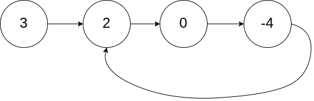
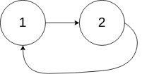
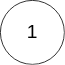

141. 环形链表
快慢指针：slow 每轮走 1 步，fast 走 2 步；有环必相遇，无环 fast 先走到 null。
思路
slow、fast都从head出发，每轮slow走 1 步，fast走 2 步。- 有环：两个指针都会进环，在环里
fast每轮追近slow1 步，必定相遇，相遇就返回true。 - 无环：
fast先走到链表尽头，循环条件fast != null && fast.next != null不再成立，返回false。 - 起点相同，所以必须先移动再比较
slow == fast；先比较会在第一步就误判为有环。
图解
最优解
1class Solution {2 public boolean hasCycle(ListNode head) {3 ListNode slow = head, fast = head;4 // fast 每次走两步，slow 走一步，5 // 有环时 fast 迟早追上 slow6 while (fast != null && fast.next != null) {7 slow = slow.next;8 fast = fast.next.next;9 if (slow == fast) return true;10 }11 // fast 走到了链表尽头，说明无环12 return false;13 }14}题目
给你一个链表的头节点 head ，判断链表中是否有环。
如果链表中有某个节点，可以通过连续跟踪 next 指针再次到达，则链表中存在环。 为了表示给定链表中的环，评测系统内部使用整数 pos 来表示链表尾连接到链表中的位置（索引从 0 开始）。注意：pos 不作为参数进行传递 。仅仅是为了标识链表的实际情况。
如果链表中存在环 ，则返回 true 。 否则，返回 false 。
示例 1：

输入：head = [3,2,0,-4], pos = 1 输出：true 解释：链表中有一个环，其尾部连接到第二个节点。
示例 2：

输入：head = [1,2], pos = 0 输出：true 解释：链表中有一个环，其尾部连接到第一个节点。
示例 3：

输入：head = [1], pos = -1 输出：false 解释：链表中没有环。
提示：
- 链表中节点的数目范围是
[0, 104] -105 <= Node.val <= 105pos为-1或者链表中的一个 有效索引 。
进阶：你能用 O(1)（即，常量）内存解决此问题吗？
题面取自力扣当前版本。
数据快照 2026-11-04。题面版权归力扣所有，本站点仅供本人学习使用，请勿对外发布。